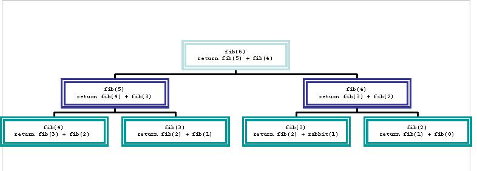
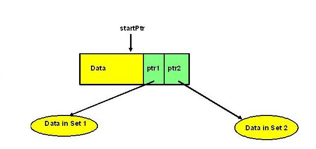
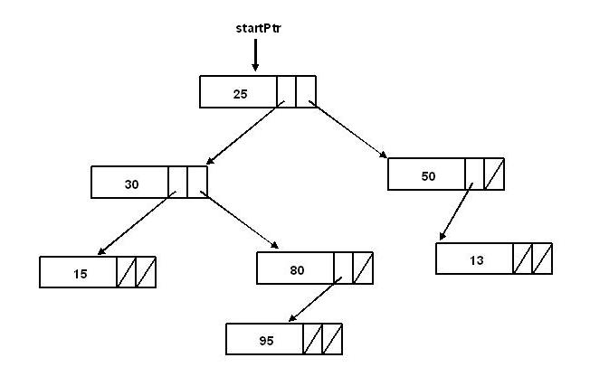

To become familiar with the concept of recursion
To learn basic guidelines in writing recursive functions
To learn how recursion is implemented
To compare recursion and iteration
Functions which call themselves are said to be recursive functions. Therefore, recursion is a problem solving technique which allows a function to call itself and this technique can be applied when the solution to a problem can be stated in terms of itself. In this lab we will examine some problems which can be stated in terms of themselves and show how these functions can be written recursively.
Example: Computing n! (n factorial)
The classic example of a problem where the solution to the problem can be stated in terms of itself is the calculation of n factorial for n >= 1. By definition:
n! = 1 * 2 * 3 * .. * n
We easily see that n! = n * (n - 1)!
Notice that to calculate n factorial recursively, we calculate n - 1 factorial and multiply by n. To calculate n-1 factorial we calculate n - 2 factorial and multiply by n - 1, etc. For example,
To calculate factorial we need a definition. The following is a recursive definition of factorial:
n! = 1, if n = 0
n! = n * (n - 1)!, if n > 0
A recursive definition consists of a base case step that defines the beginning elements in the set and a recursive step that expresses the relationship between elements in the set.
Here is a recursive C++ function to calculate n! Notice how closely it follows the recursive definitions of factorial as shown above.
// Recursive factorial function. Assume n >= 0.
int fact(int n)
{
if (n == 0)
return (1);
else
return (n * fact(n - 1));
}
When the computer reaches the base case fact(0), there are three suspended computations. After calculating the value returned for the stopping case, it resumes the most recently suspended computations to determine the value of fact(1). After that, the computer completes each of the suspended computations, using each value computed as a value to plug into another suspended computation, until it reaches and completes the computation for the original call fact(4). The details of the final computation are illustrated below:
Since fact(0) = 1, then fact(1) = 1 * 1 = 1
Since fact(1) = 1, then fact(2) = 2 * 1 = 2
Since fact(2) = 2, then fact(3) = 3 * 2 = 6
Since fact(3) = 6, then fact(4) = 4 * 6 = 24
A. Functions which call themselves are said to be
__________ functions.
B. What would be the output that would result from
cout << f(2);
given the function
int f(int n)
{
if (n == 1)
return 2;
else if (n == 2)
return 3;
else
return (f(n-1)*f(n-2));
}
C. What does the following calculate?
int f(int n)
{
if (n==1)
return 4;
else
return (4*f(n-1));
}
a. 4n
b. 4n
c. n4
d. 4 + n
D.P (Note this is a posttest question) A recursive definition has a __________ step that defines
the beginning elements in the set.
E.P How many times would f be called recursively if initially
main called f(4)?
int f(int n)
{
if (n==1)
return 4;
else
return (4*f(n-1));
}
B. Recursion Guidelines
Writing recursive functions is usually not an easy accomplishment for the beginning programmer. The most common mistake that beginning programmers make is writing recursive functions which continue to make recursive calls which means the program will never terminate. Therefore, caution needs to be taken to assure that the function will eventually stop calling itself. Let's observe some simple guidelines to aid in writing recursive functions.
A recursive function must call itself; i.e. the function fact calls the function fact.
At each successive call to the recursive function, the "size" of the problem is diminished. The next call to fact solves a problem that is identical in nature to the original problem but smaller in size.
There is one instance of the problem that is treated differently from all of the others. This special case is called the base case or the stopping condition and the solution to the problem is known in that particular case. The base case allows recursion to stop.
The manner in which the size of the problem is reduced must cause the base case to be reached.
Example: Fibonacci Sequence
A classic sequence in mathematics is the Fibonacci sequence which was defined by a mathematician named Fibonacci. He used it to explain how rabbits multiply (which is quite rapidly). Suppose we agree that a rabbit takes one month to grow to maturity. A mature pair of rabbits produces a pair of rabbits each month (one male, one female). How many rabbits exist at the beginning of month m, if we begin with a pair of baby rabbits(one male, one female)?
Beginning of Month
Number of Pairs
Explanation
1
1
pair of baby rabbits
2
1
pair of grown rabbits
3
2
original grown; new baby pair
4
3
original grown; new grown; new pair of babies of original
5
5
original grown; another grown; new grown; 2 baby pairs
6
8
5 grown from previous plus 3 baby pairs from 3 grown
7
?
?
8
?
?
9
?
?
There is a pattern here. The number of rabbits at the beginning of month m is the sum of two previous months (since we have all those grown the last month plus babies from all those from the previous month). These numbers
1, 1, 2, 3, 5, 8,...
form the Fibonacci sequence. They appear frequently in nature, mathematics, and computing. For example, the number of petals at different levels of certain flowers appear in a Fibonacci sequence.
A. What is the next number in the Fibonacci sequence that begins
1,1,2,3,5,8
B. Complete the recursive definition of the Fibonacci sequence.
f(n) = 1 for n = 1
f(n) = 1 for n = 2
f(n) = f(n-1) + ______ for n > 2
C. What does the following calculate?
int f(int n)
{
if (n==1)
return 1;
else
return (n + f(n-1));
}
a. n!
b. n2
c. nn
d. the sum of the numbers from 1 to n inclusive
Exercise 3:
Load the file
inlab9a.cc to your account. Modify inlab9a.cc
by writng a function fib(int) which takes an integer as a parameter.
The function should do the fibonacci sequence and return the value.
Turn in a script log with a cat of inlab9.cc, a compile, and three runs with the data files
inlab9a0.dat,
inlab9a1.dat, and
inlab9a2.dat. Of course, you will need to copy these files to your account
prior to the runs. When you run your program use redirection to read from
the various file (i.e. a.out < inlab9a0.dat). Exercise 4:
A.P What is the base case in the following definition?
f(n) = 2 for n = 1
f(n) = 2*f(n-1) for n > 1
a. f(1) = 2*f(n-1)
b. f(n) = 2*f(n-1)
c. f(n) = 2
d. f(1) = 2
B.P How many times would the function f be called recursively
if initially main called f(5)?
int f(int n)
{
if (n == 1)
return 2;
else if (n == 2)
return 3;
else
return f(n-1) * f(n-2);
}
C. How Recursion is Implemented
A recursive function call, like any function call, causes certain data to be placed on the system stack. A stack is a data structure such that the first item referenced or removed is always the last item entered into the stack. It is like a stack of plates in a cafeteria. When a plate is added to the stack, it is added to the top. When a plate is removed from the stack, it is removed from the top of the stack and is the plate that was added most recently.
A recursive call causes the return address to be added to the system stack as well as the current value of all local variables because when the return occurs these variables must be set back to their value before the call. For example, given the following recursive function
// An example of recursion.
void procA(int n)
{
int x;
x = 5 + n;
if (n == 1)
return x;
else
return (n*procA(n - 1));
}
If a main function were to call procA(2), then space would be set aside in memory for n (which is initialized to 2) and
x, and the instruction pointer (which tells the address of the next instruction to be executed) would be set to the address
of the first instruction in procA. procA would then begin to execute. The first statement would assign 7 to x. Since
n is 2, the else portion would be executed which would call procA(1). Before procA(1) can be executed, the value for n (2),
the value for x (7), and the current address stored in the instruction pointer would have to be stored on the stack. Then
procA(1) can be executed. When procA(1) is executed, n is set to 1, then x is set to 6. Since n is 1, the if portion is
executed and 6 is returned. The return statement causes control to pass back to procA(2). Before procA(2) can continue
execution its values for n, x, and the instruction pointer must be retrieved from the stack. This will cause n to be 2,
and procA(2) will finish executing the return statement (i.e., it will return 12 to main).
Exercise 5:
A. (T/F) A stack is a data structure in which the first item
entered is always the first item removed.
B. Given the following recursive function, what output would
result from the execution of
cout << procA(3);
int procA(int n)
{
int x;
x = 5 + n;
if (n==1)
return x;
else
return(n*procA(n-1));
}
C. Given the following recursive function, what is output by the execution of
cout << procA(3);
void procA(int n)
{
int x;
x = 20;
if (n==2)
{
x = x%2;
procA(n-1);
cout <<”x= “ << x << “\tn = “ << n << endl;
}
else if (n==1)
cout << “n = “ << n << endl;
else
procA(n-1);
cout << “End of procA, n = “ << n << endl;
}
a. n = 1
End of procA n = 1
x = 0 n = 2
End of procA n = 2
End of procA n = 3
b. End of procA n = 3
x = 0 n = 2
End of procA n = 2
n = 1
End of procA n = 1
c. n = 1
x = 0 n = 2
End of procA n = 3
d. none of the above
D.P (T/F) A recursive call must place all global variables on
the stack so they can be reset upon return.
E.P Given a recursive call to the function procB, name
everything that would have to be put on the stack?
void procB(int n)
{
int m;
float p;
m = 2n;
p = n-4;
if ((n==1)||(n++2))
return (n+1);
else
return(m+p*procB(n-1));
}
a. m and p
b. m, p, and the instruction pointer
c. m, n, p, and the instruction pointer
d. the instruction pointer
The older languages like BASIC and FORTRAN do not support recursion. One can implement recursion by stacking variable values on a stack and restoring them upon return. It is quite a complicated process and used only when necessary.
D. Recursion and Iteration
Some languages like LISP (also quite old) use recursion almost exclusively. The only way to loop in some older versions of LISP was by using recursion. You should understand that recursion often replaces a loop. It is rare to find a recursive call inside a loop (in simple programs). Such a design is a common error of those who are not adept at using recursion. Be careful! Here, for instance, is an iterative procedure that might be contained in a ListClass implementation file to print a linked list.
// Print list using a loop
void ListClass::printIter(Node * p)
{
p = head;
while (p != NULL)
{
cout << p->data;
p = p->next;
}
}
Below is the recursive version of the same procedure:
// print list using recursion
void ListClass::printRecursive(Node * p)
{
if (p != NULL)
{
cout << p->data;
printRecursive(p->next);
}
}
Notice there is no loop here other than the recursion. Also, note that, usually, recursive functions are called by non-recursive functions since they must receive a private data member of the class (the head of the list) to start executing. For example, the printRecursive() function above should be called by a "helper" function, say print() as shown below:
A. Which of the following DO NOT support recursion?
a. C++
b. FORTRAN
c. LISP
d. All of the above support recursion
B. (T/F) The following would correctly print the nodes
in a linked list.
void ListClass::printNodes(Node* p)
{
p = head;
while (p != NULL)
{
cout << p->data;
printNodes(p->next);
}
}
C. Which of the following would be the correct recursive
function for counting the nodes in a linked list?
a. int f(node* p)
{
if (p != NULL)
return (1+f(p->next));
else
return 0;
}
b. int f(node* p)
{
return (1+f(p->next));
}
c. int f(node* p)
{
if (p->next == NULL)
return 0;
else
return (1+f(p->next));
}
d. None of the above
E. Recursion and Efficiency
Each of the examples above have been very simple to provide a
solid understanding of recursion. Unfortunately, each of the examples
presented so far are inefficient. In most implementations of C++,
a function call causes a certain amount of record keeping overhead
to place items on the system stack before the call and to remove
the items upon return to the calling function. Since recursion causes
many function calls, this increases record keeping overhead even more.
Secondly, some recursive algorithms are very inefficient. This has
nothing to do with the overhead of the function calls but has to do
with the method of solution the function uses. For example in the
recursive solution for the multiplying rabbits problem, a portion
of the diagram for computing fib(6) might look like
that below:

As you can see from this diagram, the problem with
fib is that it computes the same values
over and over again. If the diagram were completed, you would be able
to see that fib(6) causes fib(2) to be computed 5 times. When n is
fairly large, many of the values are recomputed millions of times!
This huge number of computations makes the computation
very inefficient.
As can be seen in the previous discussion, recursion
can be very inefficient. However, recursion is truly valuable when a
problem has no simple iterative solution. In the following section,
we will discuss the use of recursion on a problem for which it is
very difficult to determine a non-recursive solution.
In a previous lab, we discussed the linked list.
A node in a linked list had a data field and a pointer field. Let's
consider a new type of structure in which a node contains a data
field and two pointer fields. Consider the drawing below that contains
such a structure. The pointer, startPtr, is similar
to head in a linked list. It tells us where to
"start" with the data.

Suppose such a structure were used to contain data. After adding
data to the structure in an organized manner (we will not discuss
how this data was added in this lab), the structure might appear as
follows:

Now suppose we wished to "visit each node and display the data.
We must have a step-by-step algorithm to do this since the two
pointers have made displaying the data much more complicated than
it was for linked lists.
We can use a simple recursive print algorithm for this complex
problem. Since a node appears as follows, one possible way to print
might be to print the data in the startPtr node, then print all of
the data in Set 1, and then print all of the data in Set 2.
There is a simple recursive algorithm to accomplish this. We
need a base case since the algorithm is recursive. This data structure
might be empty. This would be the case if startPtr were NULL. We
will use this condition as the base case. If the data structure is
empty, there is nothing to print so the algorithm should do nothing.
If the data structure is not empty, the print algorithm should
perform three tasks:
it must display the data in startPtr.
it must print all of the data in Set 1 pointed to by startPtr->ptr1.
it must print all of the data in Set 2 pointed to by startPtr->ptr2.
Of course there are other ways to print the data in the tree. This
algorithm has three choices of when to print the data. We have shown
the data being printed before Set 1. It could also be printed after
Set 1 but before Set 2. It could also be printed after both Set 1
and Set 2 have been printed.
Exercise 7:
Load the files
inlab9b.cc,
main9b.cc, and
inlab9b.h
to your account. Modify inlab9b.cc
by writng a recursive function countAll(node* ptr)
that will count the nodes within the data structure. CountAll should count the
node pointed by ptr. Then count all the nodes in the left data set, then count
all the nodes in the right data set.
Turn in a script log with a cat of
inlab9b.cc, a compile, and three runs with the data files
inlab9b0.dat,
inlab9b1.dat, and
inlab9b2.dat. Of course, you will need to copy these files to your account
prior to the runs. When you run your program use redirection to read from
the various file (i.e. a.out < inlab9b0.dat). Exercise 8:
A.P (T/F) It is common practice to place a recursive call inside a loop.
B.P (T/F) The following recursive function calculates the same
thing as the iterative function below it.
int recurse(int n)
{
if (n==1)
return 2;
else
return (2*recurse(n-1));
}
int iterate(int n)
{
int s = 2;
for(int i=2;i<=n;i++)
s = 2*s;
return s;
}
You have reached the end of Lab 9!!
----- End of Lab 9 - Recursion -----
Complete the Exercises on the Answer Sheet.
Turn in the Answer Sheet and the printouts required by the exercises.